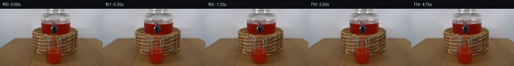

![首帧]()

Round 00
2026-11-04T23:56:17.870392+00:00像素候选变化代码 +252/−0inspection 更新
pixels e7af43b43913f199 · code 296de25ef1c3f888
查看本轮 generate.py 真实 diff
--- previous/generate.py +++ current/generate.py @@ -0,0 +1,252 @@ +from pathlib import Path +import math + +import numpy as np +from PIL import Image, ImageDraw + +import artifact_io + + +ROOT = Path(__file__).resolve().parent +SOURCE = ROOT / "first_frame.png" + + +def clamp01(value): + return max(0.0, min(1.0, value)) + + +def smoothstep(value): + value = clamp01(value) + return value * value * (3.0 - 2.0 * value) + + +def mix_pixel(frame, y, x, color, alpha): + if not (0 <= y < 144 and 0 <= x < 256): + return + alpha = clamp01(alpha) + old = frame[y, x].astype(np.float32) + new = old * (1.0 - alpha) + np.asarray(color, dtype=np.float32) * alpha + frame[y, x] = np.clip(np.rint(new), 0, 255).astype(np.uint8) + + +def glass_surface_y(x, top, phase): + # The impact point is slightly depressed, while a weak circular ripple + # travels out toward the tumbler walls. + dx = x - 134.0 + impact = 0.78 * math.exp(-((dx / 2.3) ** 2)) + ripple = 0.32 * math.sin(abs(dx) * 0.78 - phase * 0.72) * math.exp(-abs(dx) / 10.5) + bowl = 0.10 * (dx / 15.0) ** 2 + return top + impact + ripple + bowl + + +def lower_reservoir(frame, base, progress): + # A 2 px fall in the broad reservoir is enough to conserve the apparent + # volume transferred to the narrow tumbler. The tap remains untouched. + drop = 2.0 * progress + if drop < 0.15: + return + for x in range(104, 174): + if 122 <= x <= 145: # fixed tap and its reflections + continue + normalized = (x - 138.5) / 35.0 + original_top = 35.0 + 1.7 * max(0.0, 1.0 - normalized * normalized) + new_top = original_top + drop + for y in range(34, 41): + # Fractional coverage gives a smooth sub-pixel-looking descent. + coverage = clamp01(new_top - (y + 0.15)) + if coverage <= 0.0 or y + 7 >= 144: + continue + px = base[y, x].astype(np.float32) + # Only clear pixels belonging to the red reservoir; preserve rib highlights. + redness = clamp01((float(px[0]) - max(float(px[1]), float(px[2])) - 12.0) / 45.0) + if redness <= 0.0: + continue + clear = base[max(23, y - 7), x].astype(np.float32) + # Neutralize residual red from the refracted source while retaining luminance. + lum = float(clear[0] * 0.25 + clear[1] * 0.55 + clear[2] * 0.20) + neutral = np.array([lum * 1.02, lum, lum * 1.01], dtype=np.float32) + replacement = clear * 0.55 + neutral * 0.45 + mix_pixel(frame, y, x, replacement, coverage * redness * 0.86) + + # Re-establish a curved, dark translucent meniscus at its new height. + men_y = int(round(new_top)) + if 0 <= men_y < 144: + edge_strength = 0.25 + 0.10 * (1.0 - abs(normalized)) + mix_pixel(frame, men_y, x, (108, 27, 19), edge_strength) + + +def raise_tumbler_fill(frame, base, top, phase): + # Fill only the clear interior. The photographed side-wall highlights at + # x=116..119 and x=149..152 stay in front of the added liquid. + for y in range(92, 105): + for x in range(118, 151): + dx = abs(x - 134.0) + # Feather inside the slightly tapered glass walls. + left = 118.7 + 0.014 * max(0, y - 94) + right = 150.0 - 0.014 * max(0, y - 94) + edge_alpha = min(clamp01(x - left + 0.35), clamp01(right - x + 0.35)) … diff truncated; 165 more lines …